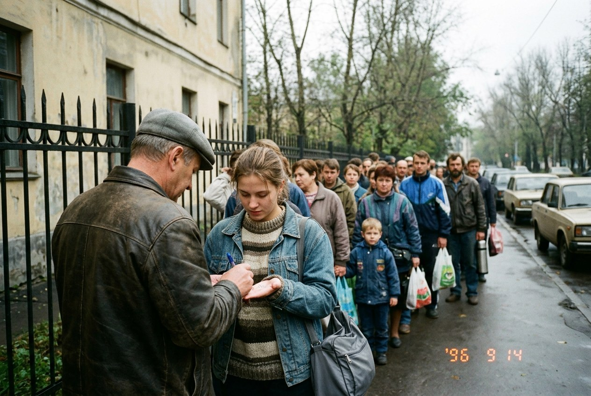

§9. На пороге (1990-е)

26 марта 1989 года россияне ответили на вопрос, вступать ли стране в Европейское сообщество. «За» проголосовали 54 человека из каждых ста. Большие города и северные губернии высказались за вступление, деревня и казачьи области на юге были против.
В 1990 году правительство подало заявку. Ответа пришлось ждать долго. Сообщество, которое с 1993 года называется Европейским союзом, принимает только те страны, где хозяйство и законы устроены по общим правилам. Россия оказалась трудным кандидатом: она больше любой из стран Союза, а живут в ней беднее. В 1994 году вместо вступления подписали договор об ассоциации, а заявка осталась ждать своей очереди. По нему русские товары продаются в Европе без пошлин, а россияне могут работать в странах Союза, но не больше определённого числа человек в год. Это число называют квотой.
В 1995 году в Европейский союз приняли Финляндию, Эстонию и Латвию, а с ними Литву, которая подала заявку позже других. Украина подала заявку в 1990 году, в один год с Россией, и вела переговоры девять лет: страна большая, и труднее всего оказалось договориться о ценах на хлеб. 1 января 1999 года приняли и её. С этого дня на украинской границе снова проверяют паспорта, хотя виза россиянам по-прежнему не нужна. Многие в России обиделись: соседей взяли, а нас оставили ждать. Другие отвечали, что обижаться не на кого и что сначала надо починить дороги и суды у себя дома. Этот спор не окончен.
За десять лет на заработки за границу уехало около трёх миллионов человек, чаще всего молодых. Едут в Германию, Финляндию, Украину. Деньги, которые они присылают домой, кормят целые уезды. Но в малых городах, где был один завод, закрываются школы, потому что некого учить.
В 1998 году нефть на мировом рынке подешевела вдвое. Рубль за одну осень упал в цене втрое, банки перестали выдавать вклады, правительство ушло в отставку. Сейчас хозяйство понемногу выправляется.
Жизнь при этом меняется быстрее, чем когда-либо. Появились переносные телефоны, а компьютеры научились соединяться друг с другом через всемирную сеть. Письмо в Гамбург или Киев теперь идёт несколько секунд.
Заканчивается двадцатый век. Россия вошла в него империей, а выходит республикой, которая стоит в очереди. Одни видят в этом век потерь. Другие отвечают, что у страны впервые нет ни одного соседа, который бы её боялся. Кто из них прав, предстоит решать уже вам.
Запомните даты. 1989 год: референдум. 1994 год: договор об ассоциации. 1998 год: падение рубля.
Вопрос. Чему может научиться страна за век, в котором она была слабой? Ответьте сами, а потом спросите у бабушки или дедушки и сравните ответы.